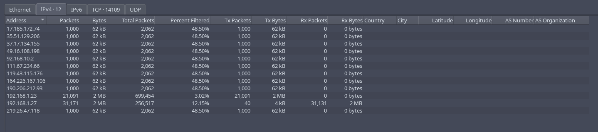
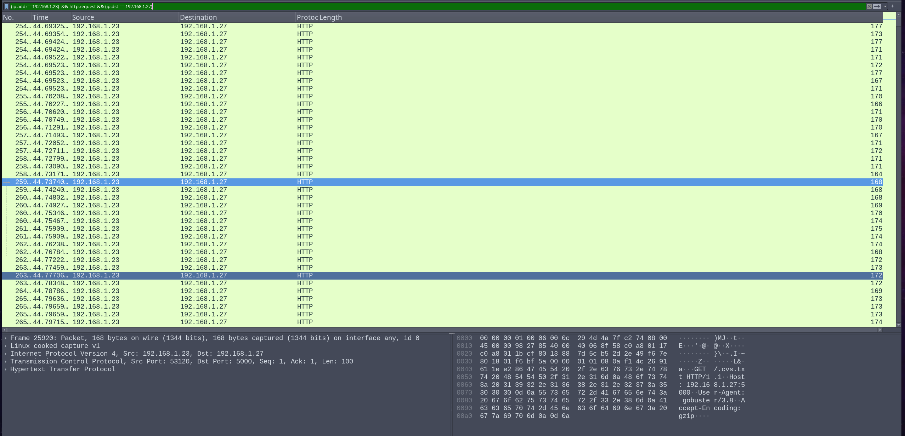

Void Step
How many decoy hosts are randomized in this recon evasion technique
Answer: 12
In Wireshark filter:
(tcp.flags.syn == 1 && tcp.flags.ack == 0 ) && (ip.dst == 192.168.1.27)
Explaination:
- Destination IP is found through manual inspection.
- For faster port scanning, we (or the attacker) perform the half-open scan, where SYN=1, ACK=0 (means: send only, no need response).
Go to Statistics > Endpoints > IPv4, count the addresses, then minus 1 (the destination address, which we need to exclude).

What is the real attacker IP address?
Answer: 192.168.1.23
The rest is either the destination ip or decoys. It seems like traffic from a person because it seems stands out compare to other traffics, through manual inspection.
How many open ports did the attacker find?
Add && (ip.addr==192.168.1.23) to previous filter in the first question.
There are 4. Look at these collumns:
| Bits/s A->B | Bits/s B->A |
|---|
If they have numbers inside, that’s your open ports.
Ports open: 22, 5000, 8000, 6789
Filter used: (tcp.dstport == 22 || tcp.dstport == 5000 || tcp.dstport == 8000 || tcp.dstport == 6789)
What web enumeration tool did attacker use?
Filter:
(ip.addr==192.168.1.23) && http.request && (ip.dst == 192.168.1.27)

It was GoBuster.
What’s the first endpoint discovered by the attacker?
Answer: /About
Found by manual inspection.
Filter used:
(ip.addr==192.168.1.23) && http.request.method==GET && (ip.dst == 192.168.1.27)
First file extension test during enumeration
Answer: .html from .bash_history.html
Found by manual inspection of chronological events. The first file appeared was .bash_history.html
Full vulnerable request parameter used in the attack
Answer: file
http://192.168.1.27:5000/read?file=%2Fhome%2Fzoro%2F.ssh%2Fauthorized_keys
What is the username discovered by the attacker?
Answer:zoro. As above shown.
What time did the attacker start bruteforcing for ssh?
Tried all the reasonable ones, but none are correct. Chances are the destination port was not 22.